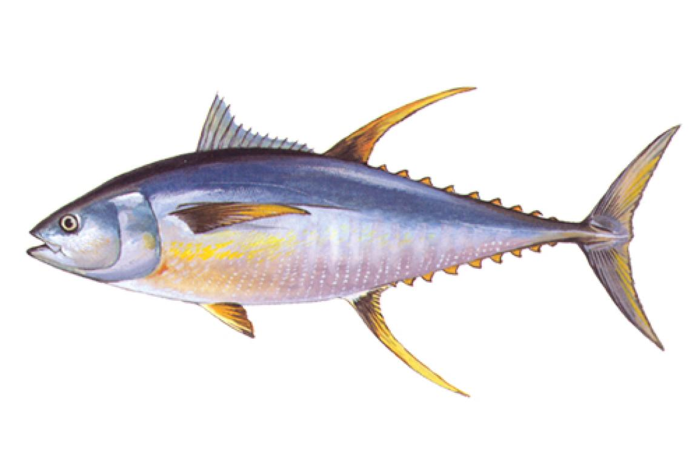

Description: Yellowfin tuna are torpedo-shaped fish that are a metallic dark blue on the back and upper sides with a yellow belly that changes to silver. The dorsal and anal fins and finlets are bright yellow. It has elongated anal and dorsal fins. Size: Yellowfin tuna grow to 400 pounds. Sometimes confused with: bigeye tuna, blackfin tuna, albacore Habitat: In the western Atlantic, yellowfin tuna are found from Massachusetts to Brazil, including the Gulf of Mexico and the Caribbean. They cover enormous distances around the globe and all stocks mingle. Yellowfin tuna often school with other species of the same size. They are frequently found schooling below drifting objects such as logs, grass, and debris. Eating habits: Yellowfin feed in open ocean waters on fishes and invertebrates associated with seaweed called Sargassum. They eat larval crabs, shrimp, squids, filefish, triggerfish, and jacks. Life cycle: Spawning takes place at sea year-round but is most frequent in the summer. The age of sexual maturity varies by region, but most fish are capable of reproduction at the age of 2 or 3 years. Fishing tips: Sport fishermen catch yellowfin tuna by trolling brightly colored lures with ballyhoo at high speeds. North Carolina anglers land more pounds of yellowfin tuna than anglers in any other state in the nation. It is the primary species supporting the offshore charter fleet.
Visit Next History Fish Page :P